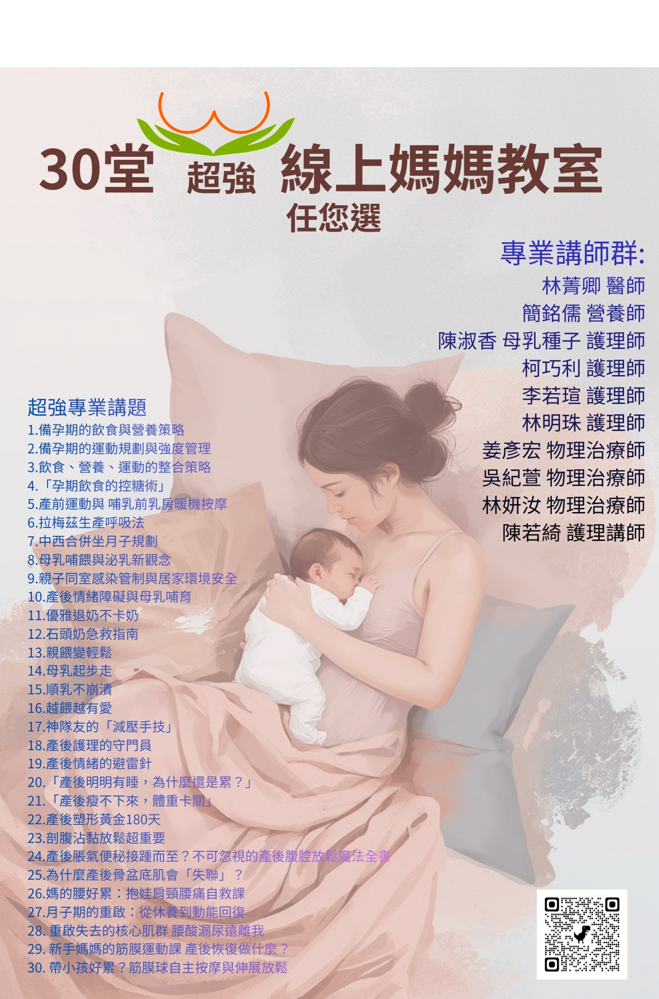

CARE · LEARNING · COMMUNITY
線上媽媽教室
30 堂線上付費課程，陪伴媽媽，也讓對產後工作有興趣的您從知識開始。
線上付費課程 · 30 堂任您選給媽媽的知識，
給媽媽的知識，
也是照顧自己的起點。
從備孕、孕期到哺育與產後恢復，選擇您現在最想了解的主題。也歡迎對產後相關工作有興趣的人，透過媽媽教室認識照護議題。
LINE 詢問與選課 →
如何選課與觀看？
- 01
選擇主題
從下方 30 堂課挑選感興趣的主題，記下課程編號或名稱。
- 02
LINE 詢問
加入 @477dnljx，告訴協會您的選課需求，確認價格與觀看規則。
- 03
確認付費
依協會提供的方式完成付款，並由協會確認。
- 04
線上觀看
協會提供觀看方式；開通時間與觀看期限於選課時確認。
30 堂媽媽教室，依需求選擇
課程名稱依您提供的媽媽教室海報整理。每堂費用、是否可單堂購買、套裝方案及最新供應情況，請透過 LINE 確認。
備孕・孕期・生產
母乳・哺育・照護
陪伴・情緒・生活
產後恢復・身體照顧
專業講師群
依媽媽教室海報列示；各堂授課講師請於選課時確認。
林菁卿 醫師 · 簡銘儒 營養師 · 陳淑香 母乳種子護理師 · 柯巧利 護理師 · 李若瑄 護理師 · 林明珠 護理師 · 姜彥宏 物理治療師 · 吳紀萱 物理治療師 · 林妍汝 物理治療師 · 陳若綺 護理講師
選課前，先了解
媽媽教室與顧問培訓有什麼不同？
媽媽教室是付費線上知識課程，供媽媽及對產後相關工作有興趣的人選擇；觀看本課程不代表取得協會舒乳顧問證書。若有證書培訓需求，請前往培訓課程專區了解線上學習、實體術科及到院臨床實習路徑。
了解顧問培訓 →課程如何計費？可以看多久？
價格、購買方案、觀看期限與付款方式請透過 LINE 詢問，由協會確認後提供觀看安排。
媽媽教室課程海報
